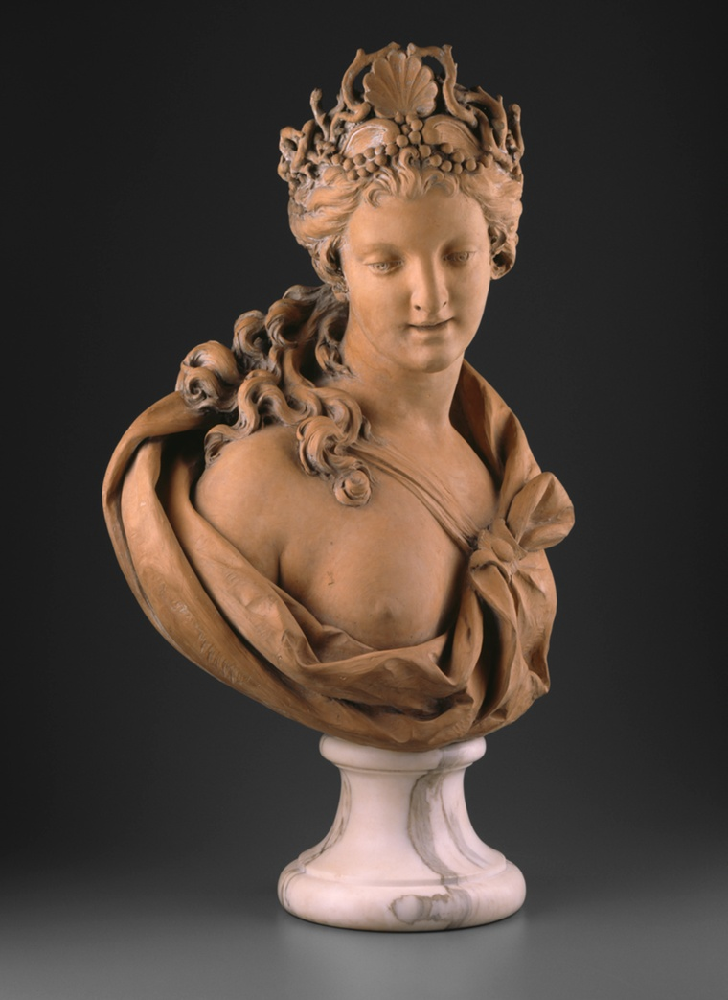
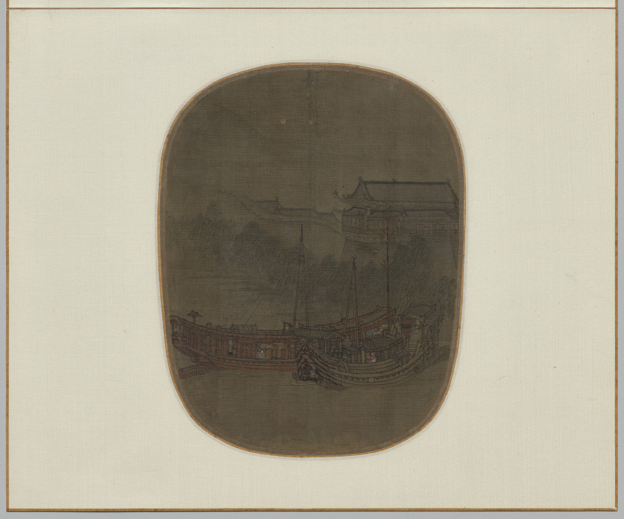

box 04 / sea things do not file. leave out. — me, 1:40am
the sea wants something from us
ships, sailors, salt, & the pull of deep water. i spread it all out on the desk & couldn't put it back.
card 01 · sonnet xliii
And, if a flattering cloud appears to show
The fancied semblance of a distant sail,
Then melts away—anew his spirits fail,
While the lost hope but aggravates his woe!
— Charlotte Smith, The Unhappy Exile
smith knows exactly how hope can wreck you worse than despair. you let yourself believe—you see what might be a ship—and then it dissolves. the cruelty is in the wanting.
O dear whare
are all the whales gone to

Lambert Sigisbert Adam (French, 1700–1759) Bust of Amphitrite Art Institute of Chicago · CC0
the sea queen herself — all marble & saltwater divinity
i kept finding the sea hiding inside other things. inside a cloud. inside a knot. inside the word flaw — which means a gust of wind, did you know that ↘
old sailor weather-words are so honest. not "gust." a flaw. something sudden & unexpected, the kind of thing that catches you off guard out on the open water.
found · meteorology
Asperitas: the cloud that looks like a troubled sea
“Well-defined, wave-like structures in the underside of the cloud… sometimes descending into sharp points as if viewing a roughened sea surface from below.”
it's the SKY but it looks like you're underwater looking up at the surface. "asperitas" = roughness in latin. first new cloud type added to the atlas in 66 years — 2017. it always looks like a storm's coming & then it mostly just… dissolves.
Ha’apai Islands artist — ‘Otua fefine (deity figure)
Early 19th c. · Whale ivory The Metropolitan Museum of Art
carved from the sea's own creature
ok the next one is the one that made me actually put my head down on the desk for a second ↓
found · uss roman logbook · japan grounds, aug 16 1838
“these 24 hours brisk winds from E & some squals saw fin backs Jumpers & porpuses but No Sperm Whales. O dear whare are all the whales gone to are they all Killed of[f] or Not.”
the misspelling of "where." the "O dear." a whaler in 1838 watching the ocean go quiet around him and writing down his dread like a weather note. he was part of the very thing emptying the sea — and you can feel him starting to understand that, right there on the page. that's the whole century in eleven misspelled words.
sailor's knot
Bowline
“used to create a fixed loop at the end of a rope.”
— NZ Maritime Museum
one exact job. won't slip, won't tighten under load. trusted for centuries because it just works.
sailor's knot
Stopper Knot
“used to prevent lines from slipping through narrow holes.”
— NZ Maritime Museum, 10 Essential Knots
keeps your rope from disappearing through a hole. no flourish, pure function. one problem, solved beautifully.
HOLD FAST
tattooed across the knuckles by English sailormen — the idea was, with these words worn into your hands, you'd keep your grip in the rigging and not fall.
(honesty note: the timeline's murkier than the lore claims, might be more 20th-c. than "ancient." but—) a tattoo not for vanity but as a literal grip on survival. i can't stop thinking about that.
the rest are poems. i'm just going to lay them out & you read whichever one your eye lands on. that's how i found them anyway.
card · hopkins, half-finished
A bush-browed, beetle-browed billow is it?
With a south-westerly wind blustering, with a tide rolls reels
Of crumbling, fore-foundering, thundering all-surfy seas in; seen
Underneath, their glassy barrel, of a fairy green.
— Gerard Manley Hopkins, What Being in Rank-Old Nature · PoetryDB
hopkins wrings language till it breaks & reforms into something alive — the words get buffeted by wind, stuttering, tossed around by the forces they describe. you feel the wave, you don't read it. & that "glassy barrel of fairy green" tucked under all the chaos stays bright in my head for days.
A Hymn To God The Father
I have a sin of fear, that when I have spun
My last thread, I shall perish on the shore;
Swear by thyself, that at my death thy Son
Shall shine as he shines now and heretofore;
And, having done that, thou hast done,
I fear no more.
— John Donne
the whole poem keeps confessing more & more, like he's emptying himself out, & then at the very end it goes quiet. he stops listing what he did wrong & just asks for light at the shore. the surrender feels true.
across the sea along the shore
What is it came ye here to note?
A young man preaching in a boat.
— Arthur Hugh Clough
there's something devastating about watching people miss the point while it happens in front of them — the crowd hunting for authority in all the expected places while the real thing floats past in a plain boat.

Unknown — Boats at Anchor on West Lake at the City Gate, 1150–1200
Album leaf; ink & color on silk · Cleveland Museum of Art · CC0
a few boats, misty dark ink on silk — it's memory itself, behind a veil
mass observation diary · day war was declared
“I myself have felt all along that war would be possibly be averted at the last moment… I haven't felt swayed by the alternate waves of pessimism and optimism that affect those around me.”
she wrote this the day war was declared & she's refusing to believe it — "alternate waves," she says, like she's the one steady boat. stubbornly calm while everyone around her pitches. she sounds like someone we know.
liverpool → sydney, 1863
The Shackamaxon
“A ship registered in Liverpool, 989 tons burden, departed 11 September 1863 bound for Sydney… The name Shackamaxon comes from Lenape, meaning ‘place where chiefs are made.’”
State Records Authority of NSW, Mariners and Ships database
what a name to carry across an ocean. a lenape word for "place where chiefs are made" — wrapped around a merchant ship hauling immigrants to the far side of the world. a whole geography of power & ceremony, translated into timber & sail.
friendships mystery
We are our selves but by rebound,
And all our Titles shuffled so,
Both Princes, and both Subjects too.
— Katherine Philips, To My Dearest Lucasia
we only exist in the mirror of another person — both rulers & ruled at once. she just caught the whole strange math of loving someone. (it's not even about the sea, i just couldn't leave it in the box.)
ok i have to sleep. the desk is a mess & i'm leaving it like this on purpose.